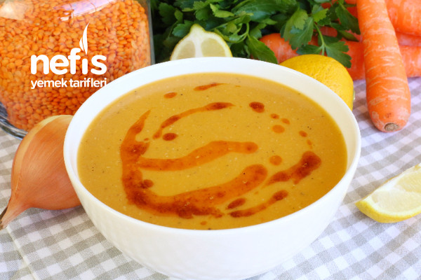

Mercimek Çorbası Tarifi
Malzemeler
1 Su bardağı Kırmızı Mercimek
1 Soğan
1 Havuç
1 Patates
1 Yemek kaşığı Domates Salçası
Tuz, Karabiber
Yapılışı
Tüm malzemeleri tencereye alın, su ekleyip pişirin...
Geri Dön
